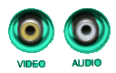

hiya!! this world doesn't have tumblr as far as i can tell but i figured out i can write my thoughts out and it manifests physically???
as a blog post???
though i'm not fully sure what to use a blog for. maybe to talk about my week
me and 6 other people show up and we meet lance and who i can only assume was lance's carer?
i didn't ask their relation, maybe they said and i forgot
now clearly someone told him to do this bc they didn't want him around and they assumed he wouldn't do it,
but i didn't want to break it to him bc honestly seeing him hyped up is rly funny
anyway we head off. lance brings a big sword that he clearly doesn't know how to wield, one of the other guys convinces him to put it away and he starts holding his fists up like he's in a fighting game instead
the trek to the rock isn't that eventful.
we see a couple giant spiders (like minecraft size spiders),
so of course someone's response is to attack them immediately without checking if they're dangerous first
we then run into a few giant boars.
this time we aren't able to stop lance as he immediately runs to one and starts punching it,
which makes them aggressive bc of course i haven't made enough animal enemies by now
we finally get to "the rock of ultimate power".
it just looks like a normal rock at first but it turns out there's a big gelatinous cube on there.
i'm not sure how i didn't see it (am i stupid?
anyway we kill the cube. and before lance touches the rock,
someone points out that the cube appears to have been there basically since we all got warped here,
and that no one else could have touched this rock.
and he breaks it to lance that whoever sent him to do this did not like him.
i think he called it "hazing" but i've never heard that term before
not much happens after that. we walk back to sorrowstar,
someone kicks lance across the street ???
ok so for the next thing that happened this week.
for context,
i've figured out this world seems to work on the rules of a game i played back in my old world called "dungeons and dragons".
if u don't know what that is idk how to explain it
or so i thought
cut to this week, a couple days after the expedition.
a letter spawns in front of me, with 3 electrum (classic starlight
anyway i think that's everything i wanted to talk about for now.
if there's anything else i'll make another blog post, but who knows how long it'll be until i do that
~ Clov3rComet
No comments yet. Be the first!
